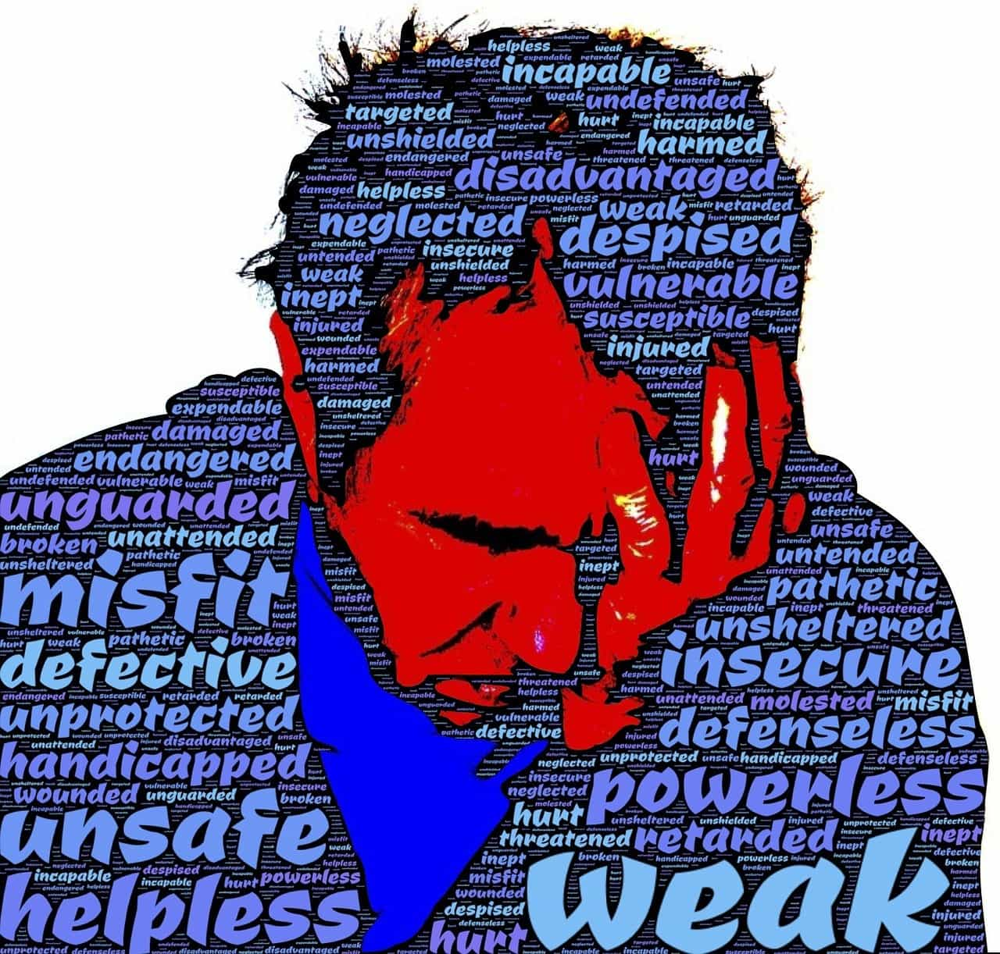
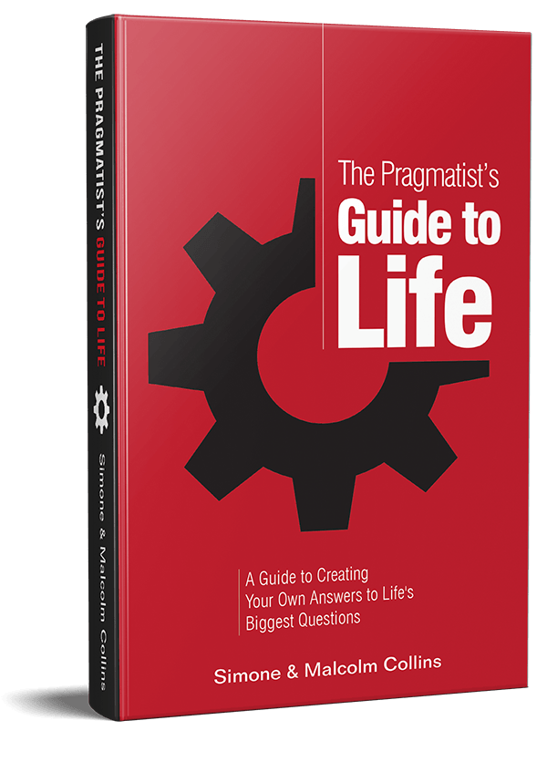

The follow article was sponsored by The Pragmatist’s Guide To Life.
Whenever you allow yourself to feel or be objected to an emotional state that does not bring you closer to your goals, you have failed yourself.
I recently wrote a book, The Pragmatist’s Guide To Life, that shows the reader, without pushing any specific conclusion, how to develop his own answers to the four fundamental questions every human with a shred of intellectual integrity must answer in order to reach his full potential:
- What do I believe has value in life?
- How will I maximize those things?
- Who do I want to be?
- How do I want other to see me?
In answering the question, “Who do I want to be?”, one of the most important factors you must determine is how your ideal self reacts to various environmental stimuli. When do you allow yourself to become angry, sad, or happy? Ideally, your emotions should spur advancement toward your objectives, though for most modern humans, emotions present some of the most powerful, insidious throttles hindering the achievement of their objectives.
It is natural to want to pretend you don’t have control over an emotional reaction to an unexpected stimuli. If you allow yourself to believe this lie, you don’t have to improve. This lie permits you to be content with what you have allowed yourself to become. But if you live this lie, you are no better than a Healthy At Every Size (HAES) activist claiming that losing weight is impossible, “so why try?”
The three emotional states you feel

Emotional states (when I use this word I really am talking about Qualia, any feeling) can be broadly categorized into three categories:
- Low Level Qualia
- High level Qualia
- Overlay States (we will talk about these later)
Low level qualia are states like physical pain, hunger, thirst, sexual arousal, or the drive towards an addiction. While there are no doubt hippies out there who pretend they don’t feel things like hunger, the reality is these states are always felt (barring some sort of serious disability, sickness, or condition that blocks these natural impulses). Our option is either to learn to endure them with dignity or succumb to them and take the action toward which they are designed to push us (taking your hand off a red hot iron, for instance).
High level qualia are states like jealousy, happiness, anger, and pride. These are mental states only experienced by social animals and exist to assist you in succeeding within the social world in which our ancestors evolved. You have complete control over whether or not you feel these states.
The part of your brain that determines whether or not you are to feel a high level qualia state is not able to directly read your environmental stimuli. If someone tells you; “You are pathetic,” the part of your brain that determines how you react emotionally can not understand the acoustic vibrations associated with that phrase, nor does it even understand the English phrase “you are pathetic.” What it can understand is the story you tell yourself about that phrase.
Essentially, the part of your brain that determines your emotional reaction to a stimulus doesn’t speak the same programming language as most of your brain. Before you react emotionally to something, your brain first has to translate the experience into a story. Next, your brain checks that story against your internal identity (a model you maintain internally about the type of person you think you are) and an emotion is generated if your brain believes your internal identity should feel that emotion in response to that story.
To expand on the above example:
- You experience someone saying: “You are pathetic.”
- You tell yourself a story in which this person is shaming you in front of your friends.
- You see yourself as the kind of person who becomes angry when shamed in front of your friends.
- You output state = anger.
This chain can be altered at a number of points. You could alter the story you tell yourself about the stimuli you are experiencing. In this example, instead of weaving a narrative about this person shaming you in front of your friends, you can tell yourself a story about how they are desperately attempting to look tough by tossing around insults. This would change your emotional output. In short, you can alter your emotional reactions by altering the way you contextualize situations.
Changing how you see yourself
Alternatively, you could change the type of person you see yourself to be. If your internal model of yourself is someone who reacts to being shamed in front of their friends with sadness or by being unphased, your brain will output a state of sadness or nothing respectively in response to that particular narrative instead of a state of anger. The book goes into how to do this in detail and there is not enough room here to cover it, but the general principle is simple: changing the way you see yourself can significantly change your reactions.
Obviously, you could also just modulate this chain reaction by avoiding the experience altogether.
All that said, our experiences are modulated by an additional, significant filter: the overlay state. An overlay state would be something like “being in the zone”, being in a manic mood, feeling irritable, etc. When you brain outputs state = sad, it is really outputting set sad state to X, where X represents the amount of sadness. The amount of sadness you actually experience however is modulated by your overlaystate.
A lower output of sadness is needed for someone in a “bummed out” overlay state to experience the emotion of sadness. For example, a woman in an extreme overaly state brought on through taking certain hormones may experience sadness at even an extremely low level of X and begin uncontrollably sobbing over something that would ordinarily be a triviality to her.
Some of your overlay state is set at birth and doesn’t modulate that much. This is where the concept of a “happiness set-point” comes from. This is the theory (supported by some studies) that an individual always eventually returns to a certain level of happiness, whether they win the lottery or develop a series illness.
However, to at least some extent, overlay states are malleable—mostly through lifestyle changes oriented around health. Most what we can do to alter overlay states, such as exercising, eating healthy, doing productive work, and socializing, is not pleasant in the moment. Nevertheless, a few moments of unpleasantness will make positive emotional states much easier to achieve.
I therefore encourage you to take careful stock of your emotional reactions and ask whether they are working in your favor. If not, you can begin to shape them by:
- Changing your experiences
- Altering the narratives you tell yourself about your experiences
- Altering your internal self model
- Changing your lifestyle to create a more favorable overlay state
These are the simplest ways to modulate your emotional state.
The Pragmatist Guide To Life delves into this topic in quite a bit more detail. I will have the price set to less than a dollar for the next couple of days for ROK readers should you find this compelling and want to explore the concept in greater depth.

All money earned from the book goes to The Pragmatist Foundation a non-profit foundation dedicated to forcing people to take responsibility over who they have allowed themselves to become. Click here to learn more about the book.
Advertise Your Product Or Site On Return Of Kings